松山市の道後温泉の近くにある石手寺は
四国八十八カ所霊場の51番目の札所で、大勢の巡礼者や参拝客が訪れる四国屈指の名刹である。
そんな石手寺に訪問したのは20世紀の末、今回十数年ぶりに再訪した。
（以前のレポートは
こちら。画像が小さいねー！）
今回は以前紹介できなかった部分や前回訪問時と変わった部分を中心にレポートをお届けしよう、という按配である。
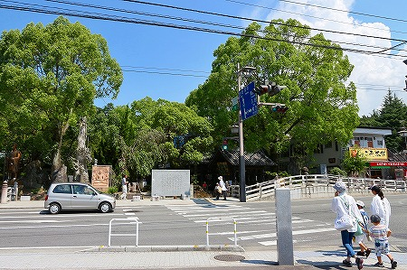
お寺の入り口。
↑停車している車の向こう側にかなりアグレッシブなコンクリ観音が見える。
近寄ってみると…
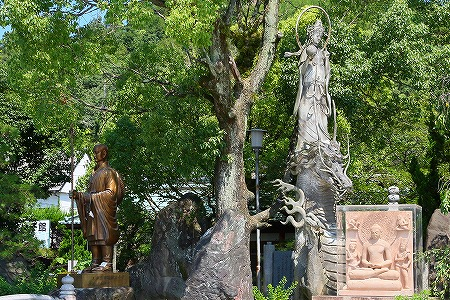
龍の上に乗った観音サマが参拝客を出迎えている。
結構大きいのにほとんどの人がスルーしているのが残念でならない。
さらに山門脇にある櫓のようなところには独特すぎる
トーテムポールのような木彫の仏像が控えている。
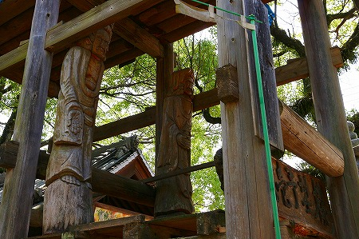
以前のレポートでも触れたが、この寺はトンネルを挟んで
表石手寺と
裏石手寺が存在する。
古刹然とした表と怪しさ全快の裏。
その表と裏のギャップこそが石手寺の真骨頂だ、と述べた記憶があるが、改めて見てみると
表側も相当なもんですなー。
さらにその傍らにあったコンクリの天女？観音サマ？
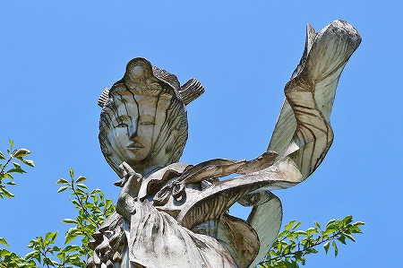
垂れた雨水が顔に集中してしまうようで
凄い御顔になってました…。
そんなこんなで表石手寺の中心部、本堂付近
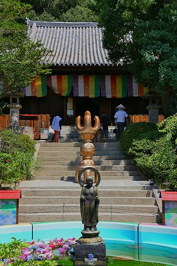
巨大な五鈷杵が階段の途中に置かれている。
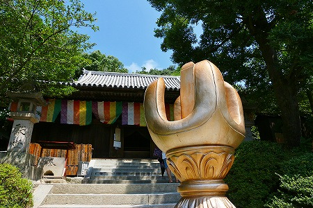
重文の本堂、三重塔を擁するこのエリアはこの寺院で最も神聖な場所だ。
お砂踏み。
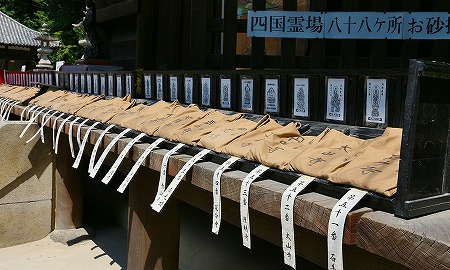
四国霊場のみならずいわゆる巡礼系の霊場ってお砂踏みやミニ霊場が多い。
そんな時に
そのお寺自体の砂や写し本尊があるのって凄く不思議な気分になりません？
ここのお砂踏みにも石手寺の砂が他の砂と一緒に並んでいるが、ココの砂は別に無くてもいいんじゃね？と思ってしまうのだ。
いやだからといってないのも変か。
どうもお寺の中にそのお寺の分身がある、という入れ子構造が未だに慣れなくてムズムズというかゾワゾワするのだ。
強いて言えば
メリーミルクの缶の女の子がミルクの缶を持っているような…。あ、余談でしたね。
そんな神聖な場所にあったハリガミ。
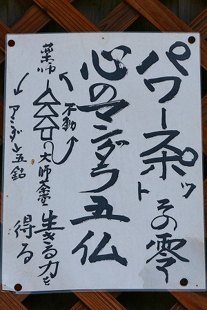
他にもこんな感じで
境内パワースポット化計画が着実に進行しているご様子。
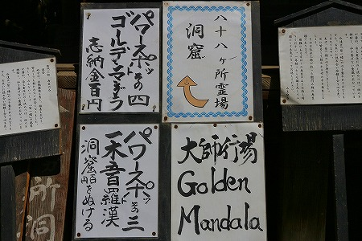
本堂脇には先ほど山門脇の櫓にいた仏像と同じ作風の木彫仏が。
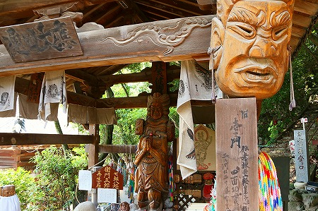
さらにその近くには裏石手寺へと繋がる洞窟へのいざないが。大仙窟 地底マントラなど
刺激的な文言が並び、いやが上にも気分が盛り上がってくる。
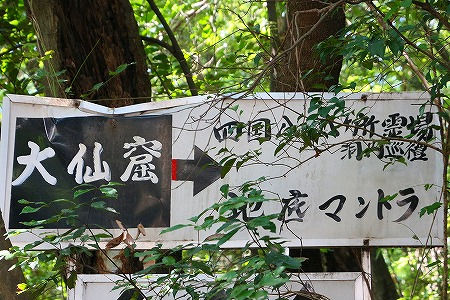
洞窟への門。
この門を越えるとこの寺の評価がガラリと変わる。
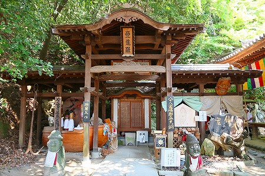
で、洞窟の入り口。
ルビコン川を渡る覚悟で入洞されたし。
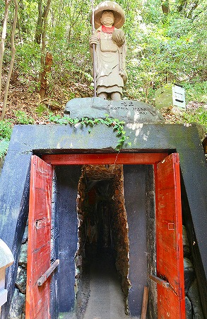
薄暗い洞窟に入って最初に出てくるのがこちらのお方。
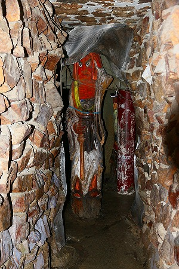
不動明王…なのだと思う。多分。
一本の丸太から削り出したその姿はまるでお隣の国のチャンスンのようだ。
以前はフラッシュが焚かれていたように記憶していたが、今回は光らなかった。
さらに進むと薄暗いトンネルが続く。
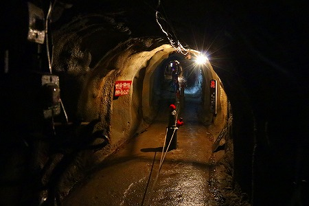
中央には地蔵が並び、その地蔵にはロープが張られており、左右の通路を別っている。
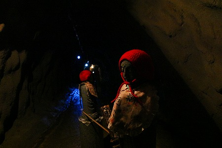
薄暗い洞窟（というかトンネル）を女の子が
泣きそうになって走り抜けていった。両親に置いてかれちゃったみたい。トラウマになりませんように…。
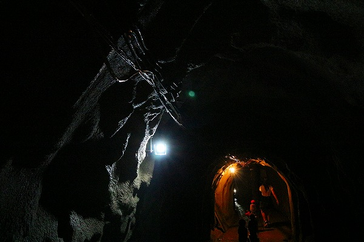
以前は派手な電飾が点滅していたが、今は真っ暗。
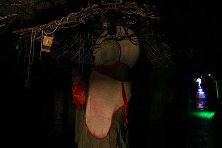
その傍らにもひょろっとしたトーテムポール仏が並んでいた。洞内の湿気でところどころ黒ずんでおり、えもいえない迫力に満ちている。
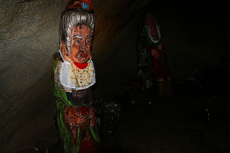
段々出口が近づいてきた。
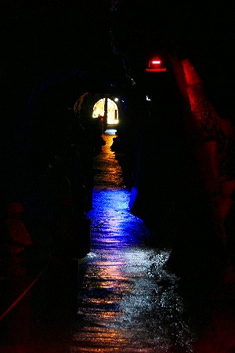
ここも以前は電飾されていたような気がする。天井から吊り下げられているのは数珠のような玉暖簾のようなもの。
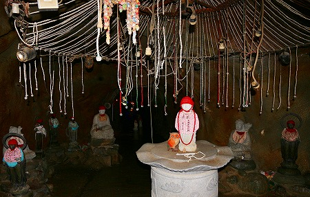
使われなくなった電源コードが所々に絡まっているのが悲しい。
そんなこんなでやっと出口。ここからが裏石手寺、別名
ファンキーブッダ帝国のはじまりである。いや、ココまでもすでに充分異様だったが。
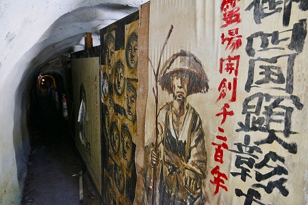
トンネルを抜けるとそこには奇妙な仏像が点在する荒れた庭園がある…はずだったが、アレ？ない！
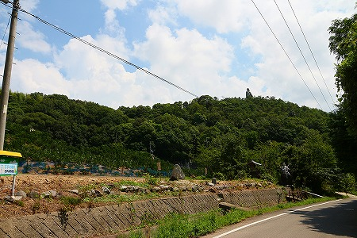
怪しげな看板や櫓は撤去されてしまい、こざっぱりした空き地になっていた。
随分様子が変わったなー。
空き地の隅に残されていたのは弁財天のモデルであるインドの女神
サラスヴァティーの像と小さな祠、あとは「たのしい石像達」と刻まれた記念碑。
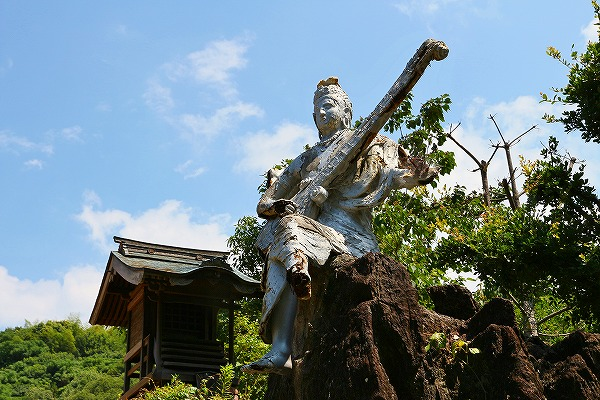
空き地の奥の方は植樹してあったから空き地全体が人工森になるのかも知れない。
そしてその向こうの山の上に立つのは
コンクリの弘法大師像。
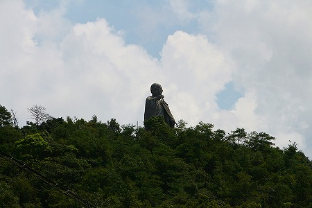
高さ16メートルの巨像だ。
前回、この大師像に行けなかったことは
個人的にかなり悔しかったので今回こそはこの弘法大師像に肉薄するつもりで再訪したのである。
というわけで十数年ぶりのリベンジを果たすべくいざ入山！
先ほどのサラスヴァティー像を過ぎると墓地がある。大師像はその背後の山頂に立っているようだ。
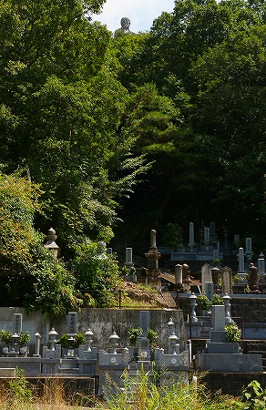
一応、案内版らしきものがあったのでそれに従って山に入っていくと…
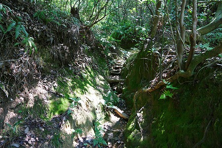
段々、道が険しくなってきたぞ。
というか道がなくなっちゃったぞ。
この後、猛暑の中、散々山の中をさ迷ったあげく、結局またしても弘法大師像にたどり着くことは出来なかった。
…もう、限界です。俺のことはヘタレと呼んでください…。
そしてこれから弘法大師サマのことはさらに尊敬させていただきます。
というわけで精神的にも肉体的にもバッチリダメージを受けた後、裏石手寺の心臓部である
五百羅漢堂へと向かう。
こちらは以前と変わらず健在の様子。よかったよかった。
閻魔様がお出迎え。看板には英語で何か書かれているが割れていて判読が難しい。たぶん閻魔へようこそ的な意味だったと思う。
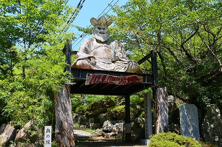
閻魔様の下を潜ると先ほどのサラスヴァティーと同じ様に
銀色にペイントされていたガネーシアがいた。
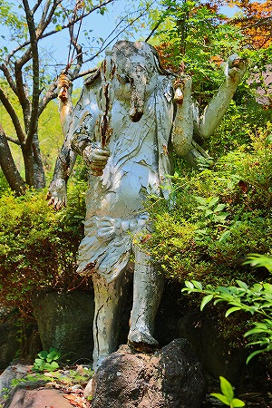
こちらもペイントは剥げ、表面は割れ、鉄筋は錆び、何とも寂しげな、それでいてゆっくりと木々の中に溶け込みはじめた感じが印象的だった。
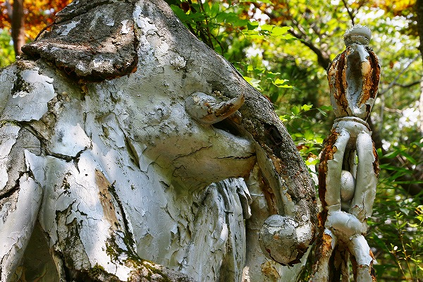
コンクリートが崩壊していく様子は決して惨めなだけではない。
この馬鹿らしいほど世知辛い現代の中で、
冗談のように贅沢に時間を使ってゆっくり、ゆっくりと朽ちていくことが出来るのは、ある種特権的な現象だとおもう。
願わくばこのまま完全に崩壊するまでこのガネーシア像の尊厳ある死を継続させていただきたいものである。
隣にあった塑像。最早何の像なのかも判らない。
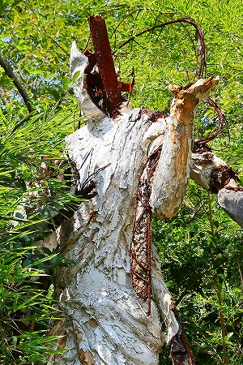
頭はバックリ割れ、鉄骨がむき出しになっている。
そんな先に五百羅漢堂、通称
マントラ塔はある。
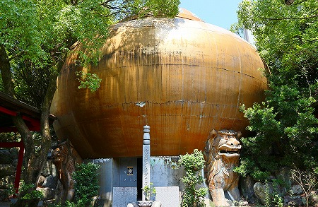
ご覧の通り、
金色のＵＦＯのような建物だ。
この寺には随分珍妙なアイテムが揃っているがこの建物の奇天烈具合に比べたら全てが色あせて見えてしまうほど
強烈なインパクトの仏堂だ。
入り口にある石塔。合掌してますよ。
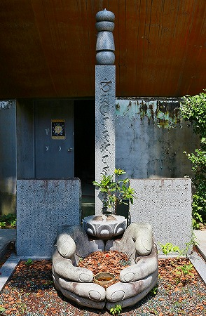
ＵＦＯ、もといマントラ塔を支える獅子も巨大だ。
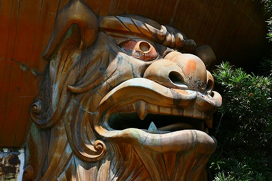
中は以前と変わらず、
木彫りのトーテムポール仏が大集合している。
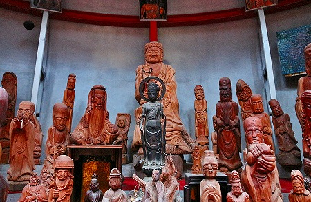
円形の堂内でみな中央を向いて並んでいる。
勿論赤いソファーに座って縦長の羅漢様の一員に加わることも可能だ。
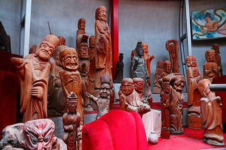
丸太から切り出しているので縦方向へ余計に伸びる分に関しては積極的だ。
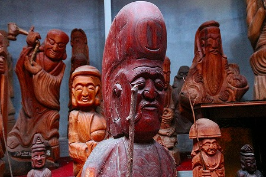
見上げればステンドグラスから陽が降り注いでいる。
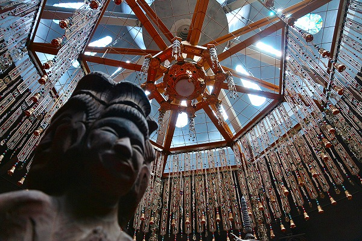
ここにも先ほどの洞窟と同じような、いやそれよりも遥かにゴージャスな玉暖簾、いや数珠状の飾りが吊るされていて、
独自の美意識が強調されていた。
一見異様な空間だが、モノ好きな人にとっては多幸感が満ちまくりの空間で、まるでこのまま宇宙まで連れて行ってくれるんじゃないか、と思えるほど魅惑的な場所なのである。
私もご他聞に漏れず気がつけば赤いソファーで遠い眼をしてうっとりしていました…。
マントラ塔こと五百羅漢堂を出ると
強インパクトのコンクリ像が。
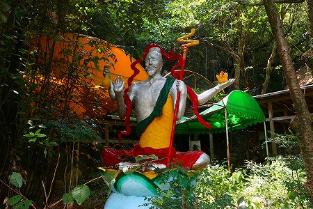
こちらは痛んでいなかったが、周辺の休憩所のようなところは大荒れ。
半分以上、いや8割方廃墟といって差し支えない状態。
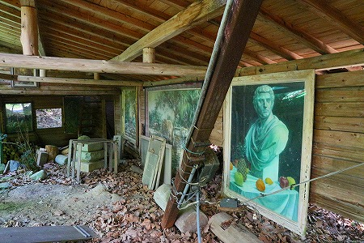
屋根は架かっているもののほぼ野ざらし状態に展示された絵画も相当色あせた御様子。
さて、そろそろトンネルを潜って娑婆の世界に戻ろうぞ。
裏石手寺サイドのトンネルの入り口はこんな。奇妙な岩が入り口を塞ぐように置かれている。
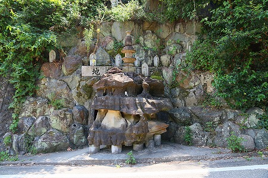
そうそう、トンネルの途中にわき道があったのでそちらへ寄ってみよう。
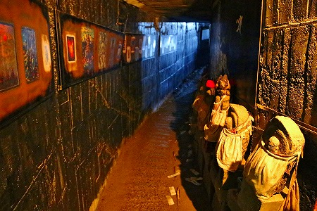
薄暗い中、石仏が並ぶ
八十八カ所洞窟。
洞窟の突き当たりは弘法大師修行場。すっかりお馴染みのトーテムポール仏や流木などが入り乱れてかなりカオスな空間になっている。
中でも組み立て式の棚の柱（何て言うんだろう、あのホームセンターとかによく置いてあるヤツね）に取り付けられて宙を舞う仏像群はシュール過ぎだった。
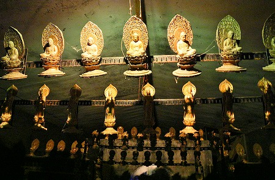
そんなこんなで洞窟を抜けて再び表石手寺へ。
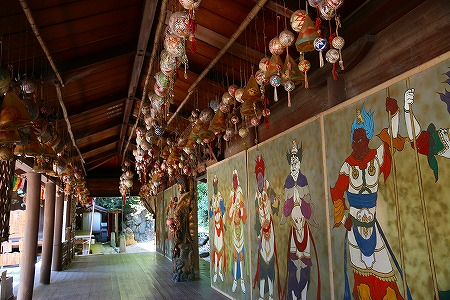
大量の手毬がさがっていた。
大勢のお遍路さんがいたが、あの洞窟に入っていく剛の者はいなかったな。
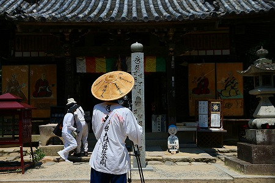
振り返れば山の上に大師さんが立っていて、「ボウズ、大きくなったらまた来いよ」と言ってるようだったが、もう大きくはなりませんので俺。
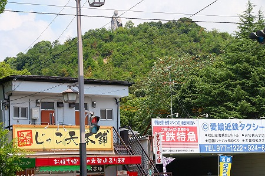
てなわけで相変わらずファンキーな石手寺だったのである。
さて。
ここからはサイドストーリーである。
実は、石手寺に点在する
銀色のコンクリ像の作者に会うことが出来たのだ。
話は数年前に遡る。
偶然作者のホームページを発見したのだ。アトリエがあるようなので今回の石手寺再訪にあわせてお邪魔してみたのだった。
訪れたアトリエは石手寺から10キロほど離れた郊外にあった。
そこにはありとあらゆる廃材がうずたかく詰まれており、周囲の長閑な雰囲気とは明らかに一線を画した肌がヒリヒリするようなアグレッシブな空気が充満していた。
作者のＯ氏は現在、造形活動は休止して自然エネルギーの創造に心血を注いでいる。
きっとアトリエには奇天烈なコンクリ像がたくさんあるんだろう、と勝手に想像していたので、肩透かしを食った格好だが、話を聞いてみるとコレが中々興味深い。
いくつかの小さな風車で発電し、太陽光で湯を沸かし、捨てられた電化製品や民具をリサイクルする、そんな現代版仙人のような生活を送っておられるのだ。
そんなO氏から石手寺に関する貴重なエピソードを聞かせていただいた。
（以下はあくまでもO氏の記憶に基づく話であり事実確認してませんのでお含みおきを）
・石手寺のコンクリ像は先代の住職から依頼されたもので、インドの神像を作って欲しいとのことだった。
・初期の作品はコンクリではなく、漆喰だったので長持ちしなかった。
（裏石手寺にあったサラスヴァティーやガネーシアの事だろう）
・骨組みや持ち物である金属パーツは全て廃材を再利用した。つまりみんな
ガラクタを拝んでたわけ。
・閻魔大王の目玉はリアルさを増すため人間の
瞳孔の写真を貼り付けた。
（現在、閻魔サマの眼は洞穴みたいになってますが…）
・現在は造形活動はやっていない。えっ？あんたアトリエのホームページ見たの？ああ、アレまだ見られるんだ〜。
…他にも色々な話が聞けた
・木彫（大量のトーテムポール仏のこと）を担当したのは先代住職の甥だったか兄だったか（僧侶ではない）。
・マントラ洞は先代住職が青森から本職のトンネル掘りを呼んで掘削させた。
…と、どうも先代住職が色々とやっちまったようで…
特にガラクタを拝む、という話は印象的だった。
まだ使える機械をいとも簡単に捨ててしまう
現代の消費社会に警鐘を鳴らしているのだ。
これは作家であるO氏も予期していなかったことだろうが、曲がりなりにも信仰の対象だった神像が数年経って表面が剥落し、中からガラクタが出て来る。
ある意味数十年かけた息の長いオチなのだとすればこれほど痛快なパフォーマンスはないだろう。
私はこれまで数多くの珍奇な仏像やら変なオブジェやら意味不明なお寺などを見てきたわけだが、どういうわけだかその背後にいる作者にはあまり興味が湧かない。
逆に目の前に見えている現象自体の判断を鈍らせないためには作者自身の思考とか生き様とかキャラクターとか知らない方が良いとさえ思っているヘソマガリで横着者なのだが、今回ばかりは色々と貴重な話が聞けて本当に良かった、と思うばかりである。
アトリエの一画に風呂があった。O氏いわく太陽の熱で沸かした風呂だからこれぞ天然温泉！と言っていた。
入ってくか？と言われたが、さっき道後温泉に入ってきたばかりなので遠慮申し上げます…。
かなり独特な石手寺のホームページは
こちら